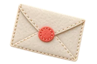

synkbrief 활용AI 예시 이미지
사진 1장으로
광고 3컷
ChatGPT 이미지 편집으로
전체 · 디테일 · 사용 장면

ChatGPT 이미지 편집으로
전체 · 디테일 · 사용 장면
01 · 사진 준비
세 장을 똑같이 늘리지 말고, 역할을 나눠요.
02 · 세 컷의 역할
어떤 제품인지 한눈에

손잡이·질감처럼 가까이

언제, 어떻게 쓰는지

05 · 결과 확인
원본
AI 결과
06 · 완성
예시의 원본과 결과는 모두 AI로 만든 가상 머그컵입니다.
받아 가는 것
구조가 바뀌었을 때, 글자가 생겼을 때
고치는 문장까지 들어 있어요.
제품 사진이 필요한 사장님께 보내 주세요.
